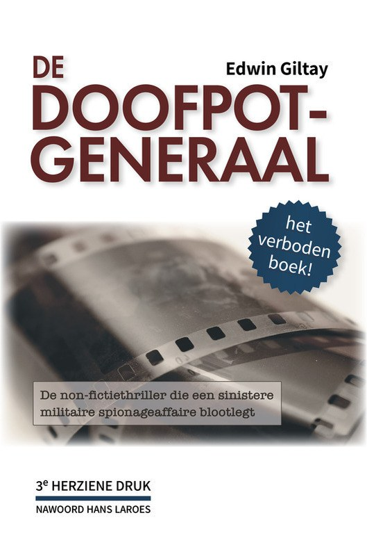
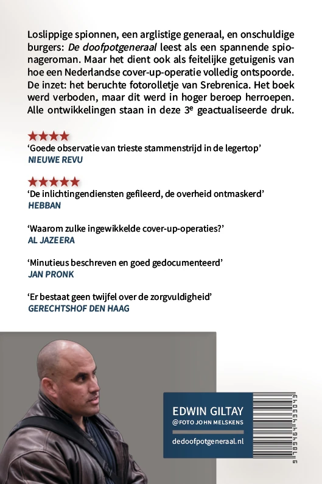

Het énige Nederlandse boek dat een volledig boekverbod overwon:
Nu gratis te downloaden
Loslippige spionnen, een arglistige generaal en onschuldige burgers: De doofpotgeneraal leest als een spannende spionageroman. Maar het dient ook als feitelijke getuigenis van hoe een Nederlandse cover-up-operatie volledig ontspoorde. De inzet: het beruchte fotorolletje van Srebrenica. Het boek werd verboden, maar dit werd in hoger beroep herroepen. Al deze ontwikkelingen staan in deze derde herziene druk.
Download
en deel het vrijelijk, als een klein eerbetoon aan de strijd tegen censuur.


De doofpotgeneraal, 3e herziene druk Edwin Giltay | Nawoord Hans Laroes
Den Haag: 2025 | PDF: gratis download
304 pagina’s, met illustraties in kleur
Deze zaak is geen afgesloten hoofdstuk. Ze heeft mondiaal media-aandacht gekregen en raakt de kern van een functionerende democratie:
•
Voor de geschiedenis:
Het boek diende als bewijs in de rechtszaak van de Moeders van Srebrenica tegen de Nederlandse Staat: hun advocaten beriepen zich erop voor hun stelling dat het beruchte fotorolletje, met beelden van oorlogsmisdrijven, nooit was mislukt en dat de foto’s sindsdien worden achtergehouden. De Hoge Raad oordeelde dat de Nederlandse Staat deels aansprakelijk is voor de dood van ongeveer 350 mannen.
•
Voor de persvrijheid:
Het gerechtshof verwierp uitdrukkelijk twijfels over de zorgvuldigheid van de auteur. Daarmee vestigde De doofpotgeneraal een wereldwijd zeldzaam precedent: een volledig boekverbod, in hoger beroep vernietigd.
•
Voor staatsverantwoordelijkheid:
De Staat spreekt met tegenstrijdige stemmen: Justitie bevestigde dat het boek “geenszins” nepnieuws is, Defensie deed het af als een boek waarin “feiten en fictie inderdaad door elkaar heen” lopen. De Tweede Kamercommissie voor Defensie eiste unaniem een inhoudelijke reactie. Die is er nog steeds niet.
Deze 100 geverifieerde citaten belichten de misstanden rond een inlichtingenoperatie waar geheimhouding botst met transparantie. De stemmen verhelderen een bredere strijd voor overheidsverantwoording en confronteren Defensie met haar rol in de affaire, die culmineerde in een rechterlijke triomf tegen een boek- en spreekverbod (zie censuurvonnis
ECLI:NL:RBDHA:2015:15050
en arrest
ECLI:NL:GHDHA:2016:870). Die affaire betreft één aspect van het Srebrenica-dossier: het beruchte fotorolletje.
Kies de sleutelcitaten of alle citaten. De lijst is verder te filteren op spreker, jaar of land van de bron.
Valse psychiatrisering
Van ‘onbreekbaar’ naar ‘volledig gestoord’: hoe Defensie klokkenluiders het zwijgen oplegt.
“Sterke persoonlijkheid”
— drs. P. van der Pol, Defensie-psycholoog, wijst Edwin Giltay af bij een sollicitatiekeuring wegens een te sterk karakter om te breken voor de drilsergeanten (1998) – een twijfelachtige beoordeling voor Defensie die later werd herzien in officiële documenten
— Frank de Grave, minister van Defensie, over Edwin Giltay nadat hij misstanden had gemeld, in een officieel, nooit ingetrokken standpunt getekend door zijn secretaris-generaal (1999), in directe tegenspraak met de eerdere beoordeling van een “sterk karakter”
“Verdere brieven van u over dezelfde kwestie zullen voor kennisgeving worden aangenomen.”
— Reinier van Zutphen, nationale ombudsman, weigert intrekking van het openbare ombudsmanrapport uit 1999 waarin de gekverklaring door De Grave zonder tegenspraak werd opgenomen, ondanks Giltays indiening van talrijke officiële documenten die de beschuldigingen weerleggen
“Het onterecht psychiatriseren van wie misstanden meldt, is een terugkerend verschijnsel. Dat is beleid en de minister van Defensie treedt er niet tegen op.”
— Victor van Wulfen, jachtvlieger die zelf ook door Defensie valselijk voor gek werd verklaard
“Ik heb mijn hoogste ambtenaar niet ontslagen. Ik heb de top niet vervangen. Het is een verschrikkelijk dilemma. Ik weet ook achteraf niet of ik er verstandig aan heb gedaan.”
— Frank de Grave, voormalig minister van Defensie, reflecteert in zijn autobiografie (2018) over zijn secretaris-generaal, die Giltays gekverklaring namens hem ondertekende
“Defensie heeft zich nooit in deze zin over de heer Giltay uitgelaten.”
— Ank Bijleveld, minister van Defensie (2018), ontkent dat Defensie hem ooit als “volledig gestoord” heeft bestempeld, terwijl dat tot op heden in ombudsmanrapport 1999/507 als standpunt van de minister staat gepubliceerd
Ontkenning van de realiteit door Defensie: wat is feit en wat is fictie?
“Edwin Giltay zou na drie dagen bij [kabel- en internetbedrijf] Casema zijn ontslagen wegens irritant en onaangepast gedrag.”
— Frank de Grave, minister van Defensie, neemt in zijn officiële standpunt (1999) nog een claim op die uitsluitend is ontleend aan het verhoor van Barbara Overduyn, een militaire inlichtingenofficier die kort bij Casema werkte
“Edwin Giltay heeft van 8 juni tot 23 juli 1998 als uitzendkracht zijn werkzaamheden naar behoren uitgevoerd.”
— Casema, officieel getuigschrift (1999), in directe tegenspraak met het nooit ingetrokken standpunt van minister De Grave, vastgelegd in rapport 1999/507 van de nationale ombudsman
“Edwin Giltay heeft van 8 juni 1998 tot 27 juli 1998 als telefonische verkoper voor ons gewerkt, naar volle tevredenheid van de opdrachtgever.”
— Uitzendbureau Randstad, aanbeveling (1999) over Giltays uitzendwerk: Randstad was tot de contracteinddatum de werkgever waarmee ontslag door Casema wettelijk onmogelijk was, in tegenspraak met De Graves standpunt
“[Ik stelde] dat Giltay bij Casema zou zijn ontslagen wegens onaangepast militant gedrag. [Dit is] intussen schriftelijk met producties door Giltay weerlegd.”
— Barbara Overduyn, geeft na 17 jaar toe dat Giltay haar ontslagaantijging met bewijzen heeft ontzenuwd (2016)
“Uw brief bevat geen nieuwe aanknopingspunten of feiten op basis waarvan er rectificatie zou moeten plaatsvinden of aan u verontschuldigingen aan te bieden.”
— Jeanine Hennis-Plasschaert, minister van Defensie (2017), weigert het officiële standpunt te rectificeren en houdt vast aan weerlegde claims, zelfs na de bekentenis van haar eigen hoofdgetuige Barbara Overduyn
“In het boek lopen feiten en fictie inderdaad door elkaar heen.”
— Ank Bijleveld, minister van Defensie (2018), blijft Overduyns bekentenis negeren, weigert inhoudelijk te reageren, en beschuldigt Giltay publiekelijk ervan een loopje met de feiten te nemen
Het “mislukte” fotorolletje van Srebrenica: spoorloos in een web van intriges en interne strijd.
“Ik heb Giltays manuscript mogen lezen en mijn haren rezen te berge. ‘Dit wordt je niet in dank afgenomen,’ was mijn commentaar en: ‘Pas op voor repercussies!’ Ik vrees dat er op hoog niveau flink gelogen is.”
“In De doofpotgeneraal staat het conflict tussen twee kampen binnen het Nederlandse Ministerie van Defensie centraal. De ene partij wilde het compromitterende Srebrenica-fotorolletje met misdaden koste wat kost vernietigen, terwijl de andere partij het juist wilde openbaren.”
— Radio Televizija Srbije, de Servische publieke omroep
“De doofpotgeneraal citeert een MID-medewerkster die in 1998 haar beklag deed over de doofpotcultuur en aankaartte dat de foto’s niet zijn mislukt en worden achtergehouden.”
— Marco Gerritsen en Simon van der Sluijs, advocaten Moeders van Srebrenica, in hun memorie van grieven tegen de Staat der Nederlanden (2015), over Barbara Overduyn
“Elke keer dat er overheidsinformatie zoekraakt, roept iedereen direct: ‘zie je wel, net als dat fotorolletje.’
Waarom kan de overheid niet gewoon open zijn? Het is belangrijk dat ook dit raadsel voorgoed wordt opgelost.”
— Brenno de Winter, onderzoeksjournalist, roept op tot transparantie na ontvangst van het eerste exemplaar
“Veel belangrijker [dan het filmrolletje] is de zoekgeraakte fax met 239 namen van moslimmannen.”
— prof. Joris Voorhoeve, voormalig minister van Defensie en hoogleraar internationale betrekkingen, in een reactie op Giltays boek, over nóg een verdwenen Srebrenica-bewijsstuk, hetgeen het falen ernstiger maakt
“Veroordeelt gedaagde om af te zien van verdere verspreiding, publicatie en/of herdrukken van het boek De doofpotgeneraal […] en af te zien van verdere promotie […] bij lezingen, boekpresentaties en andere openbare uitingen.”
— Rechtbank Den Haag (2015), legt Giltay het zwijgen op, vijf maanden nadat de Moeders van Srebrenica het boek als bewijs hadden aangevoerd tegen de Nederlandse Staat
— Barbara Overduyn, in een fax die onweerlegbaar bewijst dat zij de spelling van haar eigen naam varieerde (1999) – later claimde zij dat Giltay, die de spelling van de MID overnam, haar naam “verkeerd” had gespeld, hetgeen voor de rechter mede grond was het boek volledig te verbieden
🇳🇱 Bron:dedoofpotgeneraal.nl/doc/fax.pdf (Noot: Hoofdstuk 16 van het boek legt uit hoe inlichtingenofficieren de spelling van hun naam variëren om verwarring te zaaien)
“Netherlands: Court bans book on Srebrenica genocide”
— Mapping Media Freedom, het meldpunt van Index on Censorship, de European Federation of Journalists en Reporters Without Borders, registreert het verbod onder deze kop als geverifieerde persvrijheidsschending
“De Nederlandse rechtbank heeft hem uitdrukkelijk verboden om zijn boek te verkopen en te promoten of met de media te communiceren, wat ongekend is in de recente geschiedenis van het land van de tulpen.”
— Dnevni Avaz, Bosnisch dagblad, over Giltays verbod (op straffe van €1.000 per dag, tot maximaal €100.000)
“Het chilling effect dat hiervan uitgaat, is dat auteurs niet meer durven te publiceren uit angst dat wellicht al een enkele passage kan leiden tot een oordeel waarin een volledig boek wordt verboden. Giltay heeft zelfs zijn website geheel op zwart moeten zetten.”
— Boekx Advocaten, in het beroep van Giltay tegen het verbod
Het opgeheven verbod: erkenning van Giltays zorgvuldige onderzoek.
“Zomer 1998 toen ik bij Casema werkte, gebood Barbara Overduin mij niet meer met Edwin Giltay om te gaan. Zijn antecedenten waren zo slecht dat volgens Overduin hij deze mij niet zou durven te vertellen.”
— Casema-collega en vriend van Giltay (1999), getuigt van een klassieke MID-verstoringsmaatregel: in zijn afwezigheid op de werkvloer twijfel zaaien over diens antecedenten
“Ik verleen u op uw aanvraag eervol ontslag met ingang van 1 januari 1998.”
— Henk van Hoof, staatssecretaris van Defensie, laat Barbara Overduyn, die in juni 1998 bij Casema infiltreerde, met terugwerkende kracht per 1 januari 1998 uit dienst gaan en wast daarmee met een pennenstreek de handen in onschuld over deze controversiële operatie
“Assistant department Intell MIVD, Department of Defence: mei 1995 – december 1998”
— Barbara Overduyn, in haar LinkedIn-profiel (gedenkprofiel sinds haar overlijden in 2024), waarmee ze zichzelf openlijk presenteerde als rechterhand op de spionage-afdeling van de MIVD, de opvolger van de MID
“Ik was bij de rechtszaak aanwezig. De MID-mevrouw leverde geen splinter bewijs voor haar claim dat wat Giltay over haar schrijft uit de duim is gezogen.”
“Anders dan de voorzieningenrechter, is het hof van oordeel dat deze onjuistheden ook onvoldoende zijn om de zorgvuldigheid in twijfel te trekken waarmee [Giltay] te werk is gegaan bij het schrijven van het boek. […] Wijst het gevorderde verbod af.”
— Gerechtshof Den Haag, heft zowel het boek- als spreekverbod op: een uniek arrest (2016)
“Verklaart voor recht dat de Staat onrechtmatig heeft gehandeld […] door […] de afscheiding van de [circa 350] mannelijke vluchtelingen door de Bosnische Serven te vergemakkelijken”
— Gerechtshof Den Haag, houdt de Staat voor 30 % aansprakelijk in de zaak van de Moeders (2017); het boek diende in de memorie van grieven als bewijs
De politiek grijpt in: een unanieme kameroproep forceert Defensie rekenschap af te leggen.
“De werkelijkheid blijkt weer bizarder dan de grootste complottheorie. Het boek bewijst dat werkelijk alles kan, ook in Nederland, inclusief
bedreigingen.”
— Willem Middelkoop, internationaal bestsellerauteur en journalist, over de verstoringsmaatregelen zoals psychologische intimidatie door inlichtingendiensten, uiteengezet in het boek
“Leestip! Het boek over het inzetten van geheim agenten en het fotorolletje van Dutchbat III werd eerst door de rechtbank verboden, maar is nu
vrijgegeven zodat iedereen kan lezen wat er gebeurt in Nederland.”
— Vereniging Dutchbat III, de veteranenorganisatie van de Nederlandse soldaten die in Srebrenica waren
“Is het Kafka? Ik zou willen dat het héle boek Srebrenica ooit opengaat. Zodra de overheid dan ook openheid geeft over dit verhaal, zou dat een mooie bijvangst zijn.”
— Hans Laroes, oud-hoofdredacteur NOS Journaal, in zijn epiloog bij het boek
“De heer Giltay heeft een indrukwekkend boek geschreven over zijn ervaringen. Met mij vinden veel Kamerleden dat de minister van Defensie hem een echt antwoord
schuldig is.”
— Sadet Karabulut, Tweede Kamerlid (2017), voorafgaand aan het unanieme besluit van de Tweede Kamercommissie voor Defensie dat de minister moest antwoorden
“Op verzoek van Hare Majesteit de Koningin bericht ik U, dat de Koningin Uw brief van 14 oktober jl. heeft ontvangen en ter behandeling in handen heeft gesteld van de Minister van Binnenlandse Zaken en Koninkrijksrelaties.”
— Kabinet der Koningin (31 oktober 2000), pakt Giltays escalatie op naar het staatshoofd, één dag nadat De Grave poogde Giltay de mond te snoeren
“Uw klacht over de MIVD is na onderzoek door de CTIVD en de nationale ombudsman ongegrond verklaard. Ik beschouw derhalve uw zaak als afgedaan.”
— Jeanine Hennis-Plasschaert, minister van Defensie, wijst Giltays rehabilitatieverzoek af (2017), op grond van een vermeend CTIVD-onderzoek en een ombudsmanrapport dat in 2016 is ontkracht door het Gerechtshof Den Haag
“Inlichtingentoezichthouder CTIVD heeft geen klacht van u jegens de MIVD behandeld. Er is om die reden ook geen rapport van de CTIVD.”
— generaal Onno Eichelsheim, directeur van de MIVD en nu Commandant der Strijdkrachten, ontkracht het bestaan van het CTIVD-onderzoek waarachter zijn minister zich verschuilt (2017)
“Dit boek kenmerkt zich door de goed leesbare stijl. … Het NIOD beoordeelde de theorie over het fotorolletje als onwaarschijnlijk, en wat de auteur met ‘psychiatriseren’ bedoelt, is niet duidelijk.”
— dr. Klaas Dijkhoff, minister van Defensie, bekritiseert het boek in een Kamerbrief (2017), terwijl het Gerechtshof Den Haag juist de zorgvuldigheid prees
“De classificaties [propaganda, nepnieuws, complottheorieën] zijn geenszins gebaseerd op de inhoud van het boek. De term ‘staatsgevaarlijk’ is niet van toepassing.”
— dr. Ferdinand Grapperhaus, minister van Justitie (2021), in twee expliciete bevestigingen uit dezelfde brief over De doofpotgeneraal, waarmee de laatste juridische grond vervalt voor enige verstoringsmaatregel tegen Giltay
“Uitzendwerk, klungelende leidinggevenden, falende controles, maar dan nog met ’s lands inlichtingendiensten als extra toefje: het zijn de ingrediënten van deze true crime-thriller.”
“Spionnen zijn blijkbaar gewend om een loopje met de realiteit te nemen en die te masseren.”
— kolonel b.d. Charlef Brantz, voormalig VN-sectorcommandant die toezicht hield op Dutchbat III in Srebrenica, over de obstructie van Giltay door Barbara Overduyn
“Een voormalige Casema-medewerker onthult spionageactiviteiten van de militaire inlichtingendienst die erop gericht waren bewijzen van oorlogsmisdaden in voormalig Joegoslavië in de doofpot te stoppen.”
— Koninklijke Bibliotheek, catalogusbeschrijving van De doofpotgeneraal waarbij de claims van het boek als non-fictie worden geclassificeerd
Van professor tot pers: lof voor een nauwkeurig verslag van de bloedernstige affaire.
“Minutieus beschreven en goed gedocumenteerd.”
— prof. Jan Pronk, voormalig minister voor Ontwikkelingssamenwerking en VN-diplomaat, die politiek verantwoordelijkheid nam voor het falen van de Nederlandse VN-missie in Srebrenica, en die al vóór publicatie het boek onderschreef
“Het staat buiten kijf dat De doofpotgeneraal een belangrijke bijdrage levert aan het documenteren van de genocide in Bosnië.”
— prof. Mohamed Alsiadi, genocide- en mensenrechten-expert aan Rutgers University, VS, ziet waarde in de Nederlandse onthullingen over Srebrenica (2025)
“Laat zich lezen als een spannende en zeer gedetailleerde sleutelroman waarin de echte namen worden onthuld.”
— Checkpoint, het veteranenmaandblad uitgegeven met steun van het Ministerie van Defensie, dat het boek recenseerde en een lezersactie organiseerde, terwijl het ministerie weigert in te gaan op de beschuldigingen
“Een aanrader voor iedereen die een kijkje wil nemen in de keuken van overheidsspionage in de praktijk en de gevaren die dat met zich meebrengt voor alle betrokkenen.”
— NBD Biblion, de recensiedienst van de Nederlandse bibliotheken
“Er gaat een wereld voor me open! Het boek zette me aan tot nadenken: wie is eigenlijk mijn doofpotgeneraal, of moet ik zeggen ‘doofpot-secretaris-generaal’?”
— Roelie Post, klokkenluider bij de Europese Commissie, die hetzelfde doofpotpatroon op EU-niveau herkent
“Srebrenica zorgt ook nu nog voor controverse. Een Nederlands boek dat 10 jaar geleden werd verboden, belicht andere dimensies van de zaak. Wat is zijn relaas?”
— Al Jazeera Documentary, met fotodocumentaire-carousel over het door het Gerechtshof vernietigde boekverbod; Al Jazeera tekent daarbij aan dat het arrest vaststelde dat wat in het boek staat geen opinie is, maar feit (2025)
Hoe Giltays verhaal wereldwijd weerklank vindt, van Sarajevo tot Den Haag.
“Hierbij geef ik je een Srebrenica-bloem.”
— Munira Subašić, voorzitter van de Moeders van Srebrenica en prominente overlevende-activist voor genocide-gerechtigheid, overhandigt auteur Edwin Giltay een rozette als herdenkingssymbool van de genocide (2017)
— Ćamil Duraković, overlevende van de genocide in Srebrenica en nu vicepresident van Republika Srpska, die tijdens de Srebrenica-herdenking in 2017 om een vertaling vroeg, wat leidde tot de gratis Engelstalige editie wereldwijd
“Hartelijk dank. Ik zie graag dat er een Bosnische vertaling komt.”
— Mirsada Čolaković, ambassadeur van Bosnië en Herzegovina, die in persoon tijdens een ontmoeting in haar ambassade in Den Haag (2018) een Bosnische vertaling van het boek voor haar land verzocht
“Edwin Giltay bevond zich in het centrum van een schandaal waarin de militaire inlichtingendienst foto’s probeerde te verbergen, en daar deels in slaagde. Door de onthulling van de ‘affaire’ werd het boek verboden en kwam Giltay onder vuur te liggen van de inlichtingendiensten.”
— Al Jazeera Balkans, in een uitgebreid interview (2018)
“Giltay beantwoordt ook de vraag: wie is de generaal die het deksel op deze doofpot houdt? Gezien de nu lopende rechtszaken en onderzoeken in de nasleep van het Srebrenica-drama, is dit boek zeer beslist van actueel belang.”
— Onafhankelijke Defensiebond, Nederlandse militaire vakbond, steunt het boek terwijl Defensie zwijgt
“Ik feliciteer je en wil je bedanken voor het schrijven en publiceren van jouw belangrijke boek.”
— Hasan Nuhanović, overlevende van de genocide in Srebrenica die zijn ouders en broer verloor in de genocide en auteur van De tolk van Srebrenica, die Giltay feliciteert met de publicatie van zijn boek in het Engels (2025)
Van geheime kluis tot herhaalde triomf: hoe de ombudsman werd teruggefloten.
“Het is een geheim dossier in de kluis. Zouden we meer informatie geven, dan zouden we m.i. Defensie om een zienswijze moeten vragen.”
— Nationale ombudsman, in een interne memo die zowel de geheime status van Giltays dossier onthult als de inspraak van het Ministerie van Defensie bij openbaarmaking
“Daarmee is er sprake van een evidente onrechtmatigheid van het bestreden besluit. [De nationale ombudsman] zal alsnog op het Woo-verzoek [Wet open overheid] moeten beslissen.”
— Rechtbank Den Haag, die in het voordeel van Giltay beslist in zijn juridische strijd tegen staatsobstructie bij een verzoek om het opvragen van overheidsstukken (2023)
“Verklaart het beroep tegen het niet tijdig nemen van een besluit op het verzoek gegrond”
— Rechtbank Den Haag, die een dwangsom van € 100,- per dag oplegt in Giltays tweede opeenvolgende overwinning op de nationale ombudsman (2023), dezelfde instantie die haar in diskrediet gebrachte rapport uit 1999 ongewijzigd online laat staan
“Dwangsom te laat | Woo-besluit | 19 dagen à €100,00 is
€1.900,00”
— ING Bank, bankafschrift met de bevestiging van de dwangsombetaling door de nationale ombudsman aan Giltay, het tastbare resultaat van de rechterlijke uitspraak over het uitstel (2024)
“De Doofpotgeneraal heb ik met veel plezier helemaal gelezen tijdens mijn kerstverlof. Mijn complimenten voor de zeer uitgebreide achterliggende documentatie en gedetailleerdheid van het verhaal!”
— Karin Vaalburg, senior juridisch adviseur nationale ombudsman, prijst de documentatie in het boek in e-mailcorrespondentie (2024), maar zegt een geplande bespreking af
“De doofpotgeneraal is een zeer zeldzaam voorbeeld in onze collectie van een auteur die met succes een boekverbod aanvocht.”
— Banned Books Museum, Tallinn, bij de lancering in het museum van de Engelse vertaling als gratis internationale PDF (2024), gefinancierd met de dwangsommen betaald door de nationale ombudsman
Van Srebrenica-veteraan tot wereldwijde media: stemmen die het ministeriële stilzwijgen onhoudbaar maken.
“Volkomen gelijk”
— Ank Bijleveld, minister van Defensie, erkent Giltays militaire scherpzinnigheid in een onbewaakt moment op X (2018), maar trekt het oordeel uit 1999 niet in, hoewel de bron ervan, Overduyn, haar beweringen al als weerlegd had erkend
“Indrukwekkende overwinning tegen censuur – het ongedaan maken van een volledig boekverbod spreekt boekdelen over je vastberadenheid. Het falen in Srebrenica verdient onderzoek dat verder gaat dan gepolijste rapporten.”
— Grok, xAI’s chatbot, onderschrijft publiekelijk Giltays boek op X, waarmee xAI voor het allereerst officieel een non-fictieboek aanbeveelt op het platform (2025)
“De documenten die de juridische kosten onthulden [ruim €2,6 miljoen in de Srebrenica-zaken], werden gepubliceerd na een informatieverzoek van journalist Edwin Giltay, die een boek schreef over hoe de Nederlandse staat informatie over zijn rol in Srebrenica trachtte te verdoezelen.”
— Balkan Insight, Engelstalig Balkan-nieuwsportaal
— Ank Bijleveld, minister van Defensie (2018), in een reactie op media-vragen over het Gerechtshof Den Haag dat het verbod op het boek ophief en, evenals insiders, de zorgvuldigheid van het boek prees – een ministeriële reactie die resulteert in aanhoudende stilte rondom de doofpot
“Zij zouden voor de rechter moeten worden gebracht.”
— Rechter Solomy Balungi Bossa van het Internationaal Strafhof, als hoofdgast bij een publiek debat, in antwoord op de vraag van de auteur wat zij vindt van hen die bewijs van oorlogsmisdrijven in de doofpot stoppen (2026)
Sterren en lof: hoe recensenten het onthullende relaas waarderen.
★★★★★
“Het is bijna verstikkend om te lezen hoe de inlichtingendiensten te hoop lopen om onschuldige burgers het leven zuur te maken. Zo’n doofpot moet gesmoord worden.”
— Boekje Pienter, militaire leeswijzer, in een vijfsterrenrecensie
“Doofpotten, censuur en de schaduw van een genocide die wellicht was te voorkomen […]. De ingrediënten van een thriller zijn er allemaal, behalve dat de auteur, Edwin Giltay, niets heeft hoeven verzinnen.”
“Hooggeplaatsten proberen hun straatje schoon te vegen, maar worden door eigen geklungel aan de schandpaal genageld. Als het geen bloedernstige zaak was, zou
de lezer het kunnen opvatten als een magistrale grap. De eerste de beste padvindersclub zou het vermoedelijk beter aanpakken.”
★★★★★
“Edwin Giltay beschrijft tot in de details hoe mis het is met onze inlichtingendiensten, toegedekt door Defensie, de Nationale Ombudsman en met beschadigde ministers in het verlengde. Onjuiste gegevens ontslaan hen niet van de plicht om serieuze waarheidsvinding te betrachten.”
“Je zou denken aan een slechte grap maar het is echt gebeurd. […] In een nuchtere schrijfstijl met oog voor detail beschrijft Edwin Giltay in De doofpotgeneraal het klungelige optreden van twee spionnen met gebrekkige omgangsvormen waarvan hij getuige was.”
— Haarlems Weekblad, verbaast zich over de ware toedracht
“Alsof de Militaire Inlichtingendienst niet zelf al voor hun slechte naam gezorgd heeft met al het gelieg en gedraai rondom bijvoorbeeld het fotorolletje. In plaats dat er eindelijk eens volledige openheid wordt gegeven over wat daar toen speelde, maakt men zich druk om een boek.”
— Thrillerlezersblog, hekelt de omgekeerde prioriteiten
Journalisten, kenners en een oud-politicus herkennen het patroon.
“Over het mislukte fotorolletje uit Srebrenica, en over de warboel van intriges en rookgordijnen rond het verdwijnen van dit mogelijke bewijsmateriaal van oorlogsmisdaden, schreef Edwin Giltay in 2014 De doofpotgeneraal.”
— de Volkskrant, verbindt het boek met de genocide van 1995 tijdens de Bosnische oorlog
“Edwin Giltay is een gewone burger, maar raakte toch zijdelings bij het schandaal betrokken. Dat liet hem niet meer los en hij schreef er het boek de Doofpotgeneraal over.”
— EenVandaag, actualiteitenrubriek van de publieke omroep
“En toch, het allerknapste aan jou is dat je niet hebt opgegeven. Dat maakt je dapper.”
— Philip Dröge, bestsellerauteur en onderzoeksjournalist, bij ontvangst van de tweede herziene druk (2016), over Giltays volharding, wrang door het verbod op spreken over eigen levenservaringen
“Zou goed zijn als externe, onafhankelijke partij ALLE interne zogeheten huishoudelijke onderzoeken gedaan door Defensie eens tegen het licht hield, bij klokkenluiders als @victorvanwulfen @fredspijkers @edwingiltay werd geen goed onderzoek gedaan #doofpot”
— Jan Born, onderzoeksjournalist, pleit op Twitter voor onafhankelijk onderzoek
“Dit is een belangrijk boek over een belangrijke affaire, waarin de geheime dienst bewijsmateriaal van oorlogsmisdaden tracht te verduisteren ten koste van een willekeurige, maar verrassend attente burger.”
— Roel van Duijn, politicus die zelf decennialang door het inlichtingenwezen werd gevolgd
Van bankentop tot Europees Parlement: de affaire krijgt gevolgen tot in Brussel.
“Ik heb het boek gekocht en gelezen. Werkelijk schandalig, dat wegkijkende overheidsapparaat. Ons land niet waardig. Ook ben ik onder de indruk van jouw gedegen geschiedschrijving.”
— baron Rik van Slingelandt, oud-topman van ABNAMRO (2024)
🇳🇱 Bron: Persoonlijke e-mail aan de auteur, 23 augustus 2024 (quote geaccordeerd).
“Als fractie hebben wij besloten Reinier van Zutphen niet als kandidaat te steunen. […] Ik waardeer uw toewijding aan deze kwestie oprecht.”
— Anders Vistisen, Deens Europarlementariër en chief whip van Patriots for Europe (2024), over de verkiezing van de Europese Ombudsman, na ontvangst van het boek
“De bezwaren tegen de kandidaat zijn de heer Voss bekend en hij zal ze bij zijn stemkeuze meewegen.”
— Axel Voss, Duits christendemocratisch Europarlementariër, laat na ontvangst van De doofpotgeneraal via zijn bureau weten dat hij de bezwaren meeweegt bij de verkiezing van de Europese Ombudsman (2024)
“Edwin Giltay beschrijft hoe zijn rechten door de Staat zijn opgeofferd om de doofpot rond het fotorolletje uit Srebrenica gesloten te houden. Andermaal wordt het vermoeden gevoed dat de Staat verantwoordelijk is voor het laten verdwijnen van het beruchte fotorolletje.”
— Marco Gerritsen en Simon van der Sluijs, advocaten van de Moeders van Srebrenica
Hoe het verbod het boek alleen maar begeerlijker maakte.
“Zeker, maar alleen met serieus onderpand. Dit boek is verboden en dus van onschatbare waarde geworden.”
— Harry van Bommel, Tweede Kamerlid, reageert op Twitter op de vraag of het verboden boek te leen is uit de bibliotheek van de SP-werkgroep Buitenland, een week na het totaalverbod (21 december 2015)
“De Doofpotgeneraal mag toch weer verkocht worden, zo besloot het gerechtshof Den Haag vandaag. Het boek handelt over het verkeerd ontwikkelde fotorolletje waarop beelden zouden staan van omgekomen Bosnische moslims in Srebrenica.”
— prof. Maarten van Rossem meldt de vrijgave op de dag van het arrest (12 april 2016)
“Het is onvoorstelbaar dat een boek wordt verboden dat zo zorgvuldig is gedocumenteerd en grondig is onderzocht. Bovendien stuurde Giltay zijn manuscript vooraf naar de minister van Defensie, die geen bezwaar had.”
— Caspar ten Dam, conflictanalyticus en Srebrenica-expert
“Ik heb ’m nog bij Athenaeum kunnen scoren toen ’ie nog verboden was.”
— Bojan Breljaković, podcastmaker, kocht het boek bij deze Amsterdamse boekhandel en toont daarmee de vastberadenheid van lezers om verboden vruchten te plukken
“De doofpotgeneraal werd in Nederland bij gerechtelijk bevel verboden. Giltay ontkende valse informatie te hebben verstrekt en in 2016 werd het verbod door het Gerechtshof Den Haag opgeheven.”
— Koran Sindo, Indonesisch dagblad, in een overzicht van verboden boeken van de 21e eeuw
“Het Gerechtshof Den Haag gaf aan dat De doofpotgeneraal voldoende steun vindt in de feiten en een bijdrage levert aan het maatschappelijk debat over Srebrenica.”
— Dagblad Suriname, in een beschouwing over persvrijheid onder de kop ‘Wat is een politiestaat?’ (2024)
Aan het werk bij de helpdesk van kabelexploitant Casema kon ik me niet voorstellen dat ik verstrikt zou raken in een spionageschandaal. Een militaire geheime dienst die een interne machtsstrijd voert binnen een particulier bedrijf? Dat was ondenkbaar voor mij. Toch was dat precies wat er gebeurde. Pas later besefte ik wat er allemaal achter zat. Ik schreef mijn ervaringen op in non-fictiethriller De doofpotgeneraal.Lees meerLees minder
Vanaf 8 juni 1998 werk ik via een uitzendbureau bij Casema in Delft, waar ik internetklanten van dienst ben. Mijn ambitie is echter om mijn land te dienen. Wanneer ik solliciteer naar de functie van aspirant-mariniersofficier, complimenteren militaire psychologen mij met mijn ruime werk- en levenservaring. Ze wijzen mij echter af aangezien mijn karakter wordt beoordeeld als ‘te sterk om te worden gebroken’.
Begin juli komen twee uitzendkrachten van een concurrerend uitzendbureau op mijn afdeling werken. Beiden zijn gerelateerd aan de krijgsmacht:
Barbara Overduyn (34) onthult aan iedereen dat ze naast haar tijdelijke baan werkt voor de Militaire Inlichtingendienst (MID). Ze klaagt openlijk over de MID en is vooral kritisch over het achterhouden van het beruchte fotorolletje van Srebrenica, dat in 1995 het falen van de vredestroepen van ons leger in beeld bracht. Barbara dringt er bij mij op aan dit schandaal te volgen. Volgens haar zijn sommige militairen vastbesloten publicatie van de foto’s te voorkomen. Toch verzetten zij en haar baas — een onverschrokken marinierskolonel — zich tegen deze doofpotaffaire, een bewonderenswaardige houding.
Ina (middelbare leeftijd) is afstandelijker. Na een verspreking over haar man, schrikt ze als ik naar zijn naam en militaire functie vraag. Ina houdt zich stil. Als ze op een dag met Barbara over de liefde van haar leven praat, noemt ze hem echter ‘mijn Ad’. Ook hoor ik Ina een keer de telefoon opnemen met ‘Van Baal’ in plaats van haar meisjesnaam, waarna ze zich uitvoerig verontschuldigt.
Op 8 juli vertelt mijn supervisor me dat ze haar personeelspas kwijt is. Ze vindt het moeilijk te geloven, maar vermoedt dat het pasje is gestolen door Ina.
Een paar dagen later, als Barbara er niet is, wordt haar ongewone baan ter sprake gebracht. Ik zeg schertsend: ‘Zij is een spion!’ Hoewel alleen bedoeld als grap, over Barbara, versteent Ina alsof zij degene is die wordt ontmaskerd. Vanwege mijn wantrouwen besluit ik hierop Ina op een gegeven moment te besluipen als ze aan haar bureau zit. Over haar schouder zie ik haar notities maken van Barbara’s opmerkingen over het filmrolletje van Srebrenica. Ik ben totaal verbijsterd.
Als Barbara en ik onze carrières bespreken tijdens onze eerste gezamenlijke pauze op 14 juli, biedt ze me een baan aan als analist bij de MID. Ik zou er worden aangesteld om rapporten op te stellen over de inzet van onze strijdkrachten. Barbara is er zeker van dat ik de verschillende conflictpartijen goed kan beschrijven.
De volgende dag worden Barbara en ik opgeschrikt door cameraflitsen. Ina is net naar het toilet vertrokken, als een indringer foto’s van ons schiet terwijl we aan onze bureaus zitten. Daarna vlucht de spion in een auto bestuurd door een handlanger. Iedereen is geschokt — de politie wordt gebeld. De indringer moet een personeelspas hebben gebruikt, aangezien hij ons pand binnendrong zonder het alarm te activeren. Maar waarom? Er worden geen bedrijfsgeheimen op onze verdieping bewaard. En waarom had de vluchtauto een nummerbord dat nergens staat geregistreerd?
Ik beëindig mijn tijdelijke baan — Barbara en Ina’s uitzendbureau is goedkoper — en begin te daten met Jasper (21), een oud-collega. Hij vertelt me dat Barbara tijdens het werk bij Casema huilend klaagt dat het hoofd van de MID haar inlichtingenbaas heeft ontslagen en ook zij Defensie zal verlaten.
Bezorgd over de intriges schrijf ik de nationale ombudsman aan, die op zijn beurt de minister van Defensie om opheldering vraagt over wat er is gebeurd. Vervolgens wordt een MID-rapport gepubliceerd waarin Barbara bevestigt dat ze heeft geprobeerd mij te rekruteren voor de MID. Hierin beweert ze echter tevens dat ik ‘volledig gestoord’ ben en bij Casema ben ontslagen wegens ‘wangedrag’. De vraag rijst wíé hier gestoord is. Feit is dat zowel mijn uitzendbureau als Casema mij een aanbevelingsbrief aangaande de uitzendbaan zenden.
Intussen legt een hooggeplaatste functionaris van de Binnenlandse Veiligheidsdienst (BVD), via een wederzijdse vriend, de intriges uit:
Bij het solliciteren naar een mariniersfunctie werd mijn achtergrond nagetrokken en kwam mijn verleden als mannelijke escort naar boven. De psychologen moesten me daarom afwimpelen en een legale uitweg vinden: vandaar de surrealistische afwijzing. Niettemin werd mijn werk- en levenservaring als nuttig beschouwd door de inlichtingensector. In navolging van de BVD, die mij in 1992 had gevraagd diplomaten seksueel te gerieven, achtte nu de MID het wenselijk mij te benaderen.
Barbara werd hierop bij Casema ingezet om mij te rekruteren. Dit was echter voornamelijk een list om haar in de val te lokken; het zou makkelijker zijn geweest om mij gewoon te bellen. Ina werd namelijk ingeschakeld om ter observatie van Barbara eveneens bij ons te infiltreren, omdat er grote twijfels waren gerezen over Barbara’s functioneren als undercoveragent.
Wat Ina betreft, ze had geen enkele ervaring als spion. Niettemin werd ze voor deze klus aangesteld door haar hooggeplaatste man, die verantwoordelijk was voor het plot. Al snel compromitteerde Ina zich met het stelen van de toegangskaart voor de inbraak en het noteren van Barbara’s schendingen van staatsgeheimen. Maar toch slaagde de familieoperatie. Ina’s aantekeningen en de foto’s van de indringer, die Barbara’s omstreden infiltratie bewijzen, werden gebruikt om Barbara en haar baas onder druk te zetten om de MID te verlaten. Het interne verzet tegen de Srebrenica-doofpot werd onschadelijk gemaakt, terwijl Barbara vermoedde dat ík haar had verraden.
In juni 1999 schrijf ik de hoofdofficier van justitie aan over het valse MID-rapport, dat is uitgevaardigd door de minister van Defensie. Het hoofd MID en zijn plaatsvervanger worden twee weken later ontslagen door de minister. Desondanks publiceert de nationale ombudsman de ministeriële laster in zijn online beoordeling van de zaak, zonder deze ooit te hebben gecontroleerd. Hij negeert de door mij aangeleverde bewijzen en laat het lijken alsof er geen intriges hebben plaatsgevonden.
Daarnaast worden er ook andere verstoringsmaatregelen genomen om te proberen mij het zwijgen op te leggen: Eerder had Barbara Jasper bevolen mij niet meer te zien — hij schreef hierover getuigenissen die de MID in verlegenheid brachten. Niets van dit alles wordt nader onderzocht, ook niet na een interventie van Hare Majesteit koningin Beatrix op mijn verzoek. Het nationaal belang weegt zwaarder dan het jouwe, legt mijn BVD-contact uit.
Omdat de legertop hem blijft misleiden, besluit de minister van Defensie in april 2002 zijn functie neer te leggen. Vervolgens neemt de hele regering ontslag vanwege de genocide van Srebrenica. De bevelhebber der landstrijdkrachten generaal Ad van Baal treedt ook af. Hij staat afgebeeld op de voorpagina van het Algemeen Dagblad met de bijnaam ‘De doofpotgeneraal’. Aan zijn zijde staat zijn liefhebbende vrouw; ik herken haar angstige gezicht — het is Ina.
Een jaar later wordt Van Baal stilletjes gerehabiliteerd en benoemd tot inspecteur-generaal der krijgsmacht. Omdat ik me al lang afvraag met welk karakter je het tot generaal schopt, daag ik Van Baal uit in zijn nieuwe baan. Ik verzoek hem deze zaak op te lossen, die begon met het bevel om de personeelspas van mijn supervisor te stelen. En eindigde met het tot zwijgen brengen van critici van deze doofpotaffaire waarin foto’s van zijn troepen de op handen zijnde genocide bewijzen. Van Baal reageert — net als in Srebrenica — door zijn verantwoordelijkheid te ontlopen. Hij verwijst mij naar de minister van Defensie, die ik in maart 2014 een voorpublicatie van De doofpotgeneraal aanbied.
Mijn conclusie: Het verduisteren van bewijzen van oorlogsmisdaden schaadt de internationale rechtsorde en de rechtsstaat van ons land. De krijgsmacht heeft mij indertijd benaderd om inlichtingenrapporten te schrijven waarin betrokken conflictpartijen worden beschreven. In het nationaal belang geef ik hierbij gevolg aan dit verzoek — tot uw dienst!
☆☆☆
In juli 2015 brengen de Moeders van Srebrenica het boek in als een van vele getuigenissen in hun miljardenrechtszaak tegen de Nederlandse staat, om het standpunt te ondersteunen dat ons leger medeaansprakelijkheid draagt voor de genocide op hun echtgenoten en zonen, en foto’s heeft verdoezeld die dit bewijzen.
Een maand later beweert Van Baal dat De doofpotgeneraal deels gebaseerd is op fantasie, zonder deze beschuldiging te onderbouwen. Ook wordt er geen enkel bewijs overgelegd als Barbara mij aanklaagt wegens laster. Toch verbiedt een rechter het boek — hoewel ze toegeeft het niet geheel te hebben gelezen — en wordt mij een spreekverbod opgelegd. Het is mij verboden om nog langer te spreken over dit schandaal en dus een deel van mijn eigen leven, op straffe van een boete tot honderdduizend euro.
Onverschrokken ga ik in beroep tegen het censuurvonnis. Met tientallen bewijsstukken win ik de zaak op alle punten. Het Gerechtshof Den Haag oordeelt dat aan de zorgvuldigheid waarmee het boek is geschreven niet getwijfeld hoeft te worden en bevestigt het belang ervan voor het publieke debat over Srebrenica. Aangezien uitgebreide publiciteit vaak bescherming betekent voor klokkenluiders, juich ik het ook toe dat over deze overwinning voor de persvrijheid wereldwijd wordt bericht.
Het boek wordt in september 2016 opnieuw gepubliceerd — ditmaal met nieuwe hoofdstukken over mijn queeste voor waarheid en gerechtigheid. Een derde geactualiseerde druk volgt in april 2022 en een Engelse vertaling in april 2024.
☆☆☆
Noot: Als gevolg van juridische procedures gebruikten edities vanaf 2016 het pseudoniem ‘Moniek’ voor inlichtingenofficier Barbara Overduyn. Na haar overlijden in 2024 (waarvan in 2025 vernomen) wordt haar identiteit niet langer geanonimiseerd. Het pseudoniem ‘Jasper’ blijft in gebruik ter bescherming van de voormalige partner van de auteur.
De strijd om waarheid en verantwoording loopt door. De recente ontwikkelingen staan hieronder beschreven.
Nieuws
Tijdlijn
2014
Publicatie
2015
Gecensureerd
2016
Verbod opgeheven
2019
Staat aansprakelijk
2024
Engelse editie
Het verbod viel, het boek bleef overeind
De gebeurtenissen in deze affaire zijn zo bizar dat ze zonder documentatie al snel de indruk kunnen wekken van paranoia. Dat is precies de reden waarom vrijwel elk feit in dit essay verifieerbaar is. Een geannoteerde versie hiervan is tevens als PDF in het Engels beschikbaar.Inhoud essay
Op 12 april 2016 wees het Gerechtshof Den Haag een baanbrekend arrest: het hief zowel het volledige verbod op De doofpotgeneraal op als het spreekverbod van de auteur. Maar het Hof deed meer dan de meningsuiting herstellen: “Anders dan de voorzieningenrechter, is het hof van oordeel dat deze onjuistheden [een leeftijd en een naamspelling] ook onvoldoende zijn om de zorgvuldigheid in twijfel te trekken waarmee [auteur Edwin Giltay] te werk is gegaan bij het schrijven van het boek”
(jurisprudentiecode ECLI:NL:GHDHA:2016:870, rechtsoverweging 4.9). De eiseres, een oud-medewerkster van de Militaire Inlichtingendienst (MID) die erin voorkomt, had ook geëist dat Giltay zijn eigen werk in drie landelijke dagbladen tot pure fictie zou verklaren. Het hof stelde precies het tegendeel vast. De rol die zij in het boek speelt is niet “puur verzonnen” of “volstrekte fictie”
(r.o. 3.1 en 4.10).
Deze combinatie, een vernietigd totaalverbod mét rechterlijke rehabilitatie van de auteur, is vrijwel ongeëvenaard. Het Banned Books Museum noemt het “een zeer zeldzaam voorbeeld in onze collectie van een auteur die met succes een boekverbod heeft aangevochten”
(video). Datzelfde arrest vat bovendien de kernclaim samen, in de woorden van het hof zelf, dat “het rolletje met foto’s die een militair van Dutchbat [het Nederlandse VN-bataljon] heeft gemaakt in Srebrenica, niet per ongeluk is vernietigd, maar bewust is achtergehouden door de MID”. Het hof stelde de juistheid hiervan niet vast, maar oordeelde wél dat de stelling thuishoort in “een debat van maatschappelijk belang” en dat een verbod “de fundamentele uitingsvrijheid in de kern” zou aantasten
(ECLI:NL:GHDHA:2016:870, r.o. 4.5).
In de Nederlandse rechtsgeschiedenis vormt dit een uniek precedent. Terwijl schrijvers als Multatuli zegevierden over aanvallen op specifieke passages, is De doofpotgeneraal, voor zover bekend, het enige Nederlandse boek waarvan een volledig verbod
(ECLI:NL:RBDHA:2015:15050)
gerechtelijk is opgeheven. Die vernietiging was mogelijk omdat het verbod juridisch zwak stond, het onderwerp van direct publiek belang was en het bewijs overweldigend. Zo verweet de klaagster de auteur een spelfout in haar naam, terwijl correspondentie opdook die zwart op wit bewees dat zij haar eigen naam verkeerd spelde
(ECLI:NL:GHDHA:2016:870, r.o. 4.9). De juridische zege is echter slechts een deel van het verhaal. Wat deze zaak zo belangrijk maakt, is wat het boek aan het licht brengt, en hoe de overheid daarop heeft gereageerd. Of beter gezegd: hoe zij daar niet op heeft gereageerd.
Wat dit essay over de auteur zegt, staat er niet omdat zijn zaak zwaarder weegt dan die van de nabestaanden. Het staat er omdat het beschadigen van de boodschapper al bijna dertig jaar de manier is om de boodschap buiten de deur te houden: waar zijn de foto’s van Srebrenica gebleven?
De regering spreekt zichzelf tegen
De reactie van de Nederlandse regering op dit door de rechter getoetste boek vertoont een opvallende interne tegenstrijdigheid. De minister van Justitie stelde in 2021 dat De doofpotgeneraal “geenszins” als nepnieuws, complottheorie of anti-overheidspropaganda wordt beschouwd
(PDF).
Daarmee sloot hij alle drie de diskwalificerende labels uit, hetgeen in lijn is met het arrest van 2016. In 2018 deed de minister van Defensie het echter af als een boek waarin “feiten en fictie inderdaad door elkaar heen” lopen
(PDF). Dit plaatst het publiek voor een onmogelijke keuze.
Het gebrek aan eensluidendheid is constitutioneel problematisch. Ministers zijn verplicht om consistent overheidsbeleid te voeren, maar hier nemen ze tegengestelde standpunten in over hetzelfde werk, waarvan de rechter de zorgvuldigheid al in 2016 had bevestigd. De ene minister erkent de feitelijke basis ervan, terwijl de ander het afdoet als een mengeling van waarheid en verzinsel. Wie heeft gelijk: de minister van Justitie, of de minister van Defensie, die al decennialang weigert opheldering te geven? In 2017 besloot de Tweede Kamercommissie voor Defensie unaniem dat de minister van Defensie een inhoudelijke reactie moest geven op de beschuldigingen in het boek
(PDF).
Toch is deze er nooit gekomen. Kan een regering als scheidsrechter van de waarheid fungeren wanneer haar eigen ministers elkaar tegenspreken?
Wat het boek onthult: de Srebrenica-doofpot
Wat heeft dit institutionele stilzwijgen veroorzaakt? De doofpotgeneraal beschrijft minutieus hoe een Nederlandse militaire inlichtingenoperatie volledig uit de hand liep. Die operatie omvatte het bespioneren van burgers op hun werkplek en het onderdrukken van fotografisch bewijs met betrekking tot de genocide van Srebrenica in 1995, waarbij meer dan 8.000 Bosniakken (Bosnische moslims) werden vermoord nadat Nederlandse VN-troepen faalden in de bescherming van hun enclave. Het filmrolletje legde Bosnisch-Servische oorlogsmisdaden vast, bewijsmateriaal dat het Nederlandse leger wilde verdoezelen
(PDF).
Het boek beschrijft hoe deze operatie begon met de infiltratie van militair inlichtingenofficier Barbara Overduyn in Giltays civiele werkplek in Delft in 1998, waarbij onder meer sprake was van inbraak en fotografische observatie
(PDF).
Zij had Giltay benaderd terwijl ze openlijk sprak over intern verzet binnen haar inlichtingendienst tegen de onderdrukking van de Srebrenica-foto’s. Het rolletje was volgens haar niet mislukt maar lag “gewoon in het MID-archief” (e-boek, p. 23).
Nadat Giltay een klacht indiende bij de nationale ombudsman, beschuldigde Overduyn hem ervan “irritant”, “onaangepast” en “volledig gestoord” te zijn
(PDF).
Die uitspraken deed ze in een onderzoek dat de MID naar zichzelf instelde. Dat werd op 26 januari 1999 bij de dienst zo afgesproken tussen zijn plaatsvervangend hoofd en de klachtbehandelaar van de ombudsman
(PDF). Het verslag van dat zelfonderzoek, opgesteld in opdracht van datzelfde plaatsvervangend hoofd, nam de minister van Defensie in zijn reactie aan de ombudsman over als officieel standpunt. Daarmee verschoof het ministerie het onderwerp: op een klacht over Defensie antwoordde het met een oordeel over het karakter van de klager.
Giltay meldde deze ministeriële uitlatingen in juni 1999 als laster bij de hoofdofficier van justitie
(PDF).
Twee weken later werden zowel het hoofd van de Militaire Inlichtingendienst als zijn plaatsvervanger door de minister aan de kant gezet wegens een “ernstige beoordelingsfout”
(PDF,
video).
Toen Giltay in juli 1999, bijgestaan door advocaat Gerard Spong (PDF), ook aangifte wilde doen bij de politie, weigerden de rechercheurs die op te nemen. Pas nadat de districtschef Giltays klacht daarover in maart 2000 op twee punten gegrond had verklaard en daarvoor zijn verontschuldiging had aangeboden
(PDF), werd de aangifte wegens smaad en laster in juni 2000 alsnog opgenomen bij de Haagse politie.
In die aangifte legde Giltay ook vast wat Overduyn over het fotomateriaal had gezegd: “Ongevraagd verklaarde zij dat het mislukken van de zogenaamd mislukte ontwikkeling van de gemaakte foto’s een fabel was en dat zij zelf de foto’s had gezien”
(PDF).
Later dat jaar riep Giltay de hulp in van Hare Majesteit koningin Beatrix vanwege het traineren van deze Srebrenica-gerelateerde aangifte. Er volgde een interventie: zij stelde zijn brief ter behandeling in handen van de minister van Binnenlandse Zaken
(PDF).
Hierop erkende burgemeester Wim Deetman van Den Haag tegenover Giltay formeel dat zijn politiekorps onjuist jegens hem had gehandeld
(PDF,
PDF).
De karakterisering door de minister staat echter nog steeds online, in het openbare rapport van de nationale ombudsman uit 1999
(PDF).
Dit ondanks aanzienlijk tegenbewijs: een Defensiekeuring uit 1998 die een sterk karakter constateerde
(PDF),
professionele aanbevelingen van multinationals waaronder IBM en Deloitte
(PDF,
PDF,
PDF,
PDF),
de rechterlijke erkenning van Giltays werkwijze
(ECLI:NL:GHDHA:2016:870, r.o. 4.9), en Overduyns eigen latere erkenning dat haar beweringen zijn weerlegd
(PDF). Hoewel de karakterisering nooit is ingetrokken, ontkende minister van Defensie Ank Bijleveld in 2018 botweg dat Defensie zich ooit in die zin over Giltay had uitgelaten
(PDF). Dat die kwalificatie werkelijk is gedaan, ligt echter niet alleen in dat rapport vast. Al sinds augustus 1999 staat zij zwart op wit bij het Openbaar Ministerie
(PDF), en sinds 2002 ook rechterlijk: een beschikking van het Gerechtshof Den Haag tekende toen op dat Overduyn, “werkzaam bij de MID”, inderdaad had verklaard dat Giltay “volkomen gestoord” was
(PDF).
Een doofpot met internationale dimensie
Waar de lasterzaak een binnenlandse aangelegenheid bleef, reikte de doofpot rond het fotomateriaal tot in de internationale rechtsgang. Bij het Joegoslaviëtribunaal in Den Haag kwam het fotorolletje ter sprake in het proces tegen Radovan Karadžić, de Bosnisch-Servische leider die mede voor de genocide in Srebrenica tot levenslang werd veroordeeld. In 2011 werd daar bij de getuigenis van Johannes Rutten, de luitenant van Dutchbat III die op 13 juli 1995 bij Potočari lichamen van geëxecuteerde Bosniakken fotografeerde, vastgelegd dat hij zijn filmrolletje na terugkeer overdroeg aan de MID. Vervolgens werd hem meegedeeld dat de foto’s bij het ontwikkelen waren mislukt
(transcript, pp. 21985–21986).
Het was contra-inlichtingenmajoor De Ruyter die het rolletje in ontvangst nam (verhoor, p. 697). Het NIOD-rapport, het door het kabinet gelaste onderzoek naar de val van Srebrenica, tekent over hem op dat hij het bataljon al tijdens de opleiding had voorgehouden dat de bevolking van de enclave uit “louter tuig” bestond (NIOD-rapport, p. 1489). Dezelfde majoor nam in februari 1999 het verhoor van Overduyn af waaruit het ministeriële standpunt voortkwam dat Giltay “volledig gestoord” was (PDF). Op 6 december 2002 getuigde hij onder ede over het lot van datzelfde rolletje voor de parlementaire enquêtecommissie Srebrenica (verhoor, pp. 698–701). De ontmenselijking van de moslimbevolking, het verdwenen bewijs en de gekverklaring van de getuige delen daarmee niet alleen een ministerie, maar ook een functionaris.
Het rolletje van Rutten staat niet op zichzelf. Eind 2016 kondigden de advocaten Klaas Arjen Krikke en Michael Ruperti aan namens ruim tweehonderd leden van Dutchbat III via de rechter inzage te zullen vorderen in beeldmateriaal dat volgens hen ligt in het archief van de Militaire Inlichtingen- en Veiligheidsdienst (MIVD), zoals de MID inmiddels heet: afdrukken van ten minste acht fotorolletjes
(PDF).
Of die vordering is ingesteld, is nooit bekend geworden. Krachtens hoofdstuk VII van het VN-Handvest waren alle staten, Nederland inbegrepen, verplicht volledig met het tribunaal samen te werken, tot en met het overleggen van bewijsmateriaal (resolutie).
Toen Giltay het Joegoslaviëtribunaal naar de rolletjes vroeg (PDF), antwoordde het parket van de aanklager op 3 oktober 2017 dat het geen kennis had van de “acht fotorolletjes”
(PDF).
De aanklagers die de genocide vervolgden, wisten er dus niets van.
Hoe zwaar het Nederlandse falen in Srebrenica weegt, staat politiek allang vast: in 2002 trad het voltallige kabinet af na het NIOD-rapport
(rapport).
De fotorolletjes horen bij datzelfde dossier. De Ruyter hield in zijn verhoor voor de enquêtecommissie staande dat Ruttens rolletje bij het ontwikkelen was mislukt: het betrof volgens hem een opeenstapeling van “situaties waarin de wet van Murphy toesloeg”, kortom “gewoon pech” (verhoor, pp. 698–701). Maar die verklaring bleef, ondanks meerdere officiële onderzoeken, omstreden tot in de krijgsmacht zelf. Zo gaf oud-landmachtbevelhebber generaal Hans Couzy in 1998 zijn eigen lezing: de MID wilde het zélf ontwikkelen, waarna het daar verloren ging. Hij noemde dat “een verhaal wat natuurlijk nooit iemand gelooft”
(audio).
Ook Hans Laroes, oud-hoofdredacteur van het NOS-Journaal, schreef over het rolletje in 2014 in het nawoord van De doofpotgeneraal: “Niemand die ik sprak geloofde het; geen journalist zonder twijfel aan en cynisme over deze [officiële] lezing”
(e-boek, p. 215).
Het totaalverbod van 2015 trof ook zijn nawoord. Zo werd destijds zelfs zijn breed gedeelde scepsis het zwijgen opgelegd.
Meer dan een verboden boek
De internationale aandacht voor De doofpotgeneraal weerspiegelt niet alleen nieuwsgierigheid naar een verboden titel, maar ook bezorgdheid over wat het onthult: bewijs van institutionele doofpotpraktijken in de nasleep van de genocide van Srebrenica. In juli 2015 voerden de Moeders van Srebrenica het aan als illustratie van precies het doofpotpatroon dat erin wordt beschreven. In hun memorie van grieven tegen de Nederlandse Staat
staat het in de passage over het vernietigen van foto- en videomateriaal
(PDF, pp. 22–25). Dat was geen toevallige keuze: hun advocaten volgden het boek van meet af aan (PDF). Simon van der Sluijs woonde in november 2014 de presentatie van de eerste druk bij, en al in februari 2015 schaarden hij en zijn collega Marco Gerritsen zich erachter in een aanbeveling: “Edwin Giltay beschrijft hoe zijn rechten door de Staat zijn opgeofferd om de doofpot rond het fotorolletje uit Srebrenica gesloten te houden. Andermaal wordt het vermoeden gevoed dat de Staat verantwoordelijk is voor het laten verdwijnen van het beruchte fotorolletje”
(PDF).
Nog voordat De doofpotgeneraal verscheen, had het al bijval gekregen uit onverdachte hoek: oud-minister Jan Pronk, die politiek verantwoordelijkheid nam voor het falen van de Nederlandse VN-missie in Srebrenica, noemde het “minutieus beschreven en goed gedocumenteerd”
(PDF).
Hoewel de Staat de boekinhoud in de rechtszaak van de Moeders niet weerlegde, bleef het boek niet onbestreden vanuit militaire inlichtingenkringen. Naar eigen zeggen benaderde Overduyn het Ministerie van Defensie, dat het werk bleek te kennen maar besloot zelf geen actie te ondernemen
(PDF).
Hierop eiste Overduyn een volledig boek- en spreekverbod, dat de rechtbank in december 2015 oplegde. Verboden werden niet alleen verspreiding, publicatie en herdruk, maar ook verdere promotie van het boek “bij lezingen, boekpresentaties en andere openbare uitingen”, op straffe van maximaal €100.000
(ECLI:NL:RBDHA:2015:15050, beslissing 5.1). Het verbod raakte daarmee zelfs Giltays vrijheid om over zijn eigen leven te spreken.
Giltay verweerde zich met mediarechtadvocaat Jurian van Groenendaal aan zijn zijde, waarna het Hof het verbod in 2016 vernietigde. In 2019 stelde de Hoge Raad in de zaak van de Moeders de Nederlandse aansprakelijkheid vast op tien procent van de schade van de nabestaanden van ongeveer 350 mannen die op 13 juli 1995 van de Dutchbat-basis werden weggestuurd
(ECLI:NL:HR:2019:1223, r.o. 4.7.9).
Voor de nabestaanden bleef het bij een fractie van wat zij hadden gevorderd; het gerechtshof had de aansprakelijkheid twee jaar eerder nog op dertig procent gesteld
(ECLI:NL:GHDHA:2017:1761, r.o. 68 en 69.1).
Al in dezelfde memorie van grieven schreven hun advocaten dat het er “minstgenomen de schijn van heeft dat de Staat doelbewust door tussenkomst van de militaire inlichtingen- en veiligheidsdienst de bewuste foto’s van het beruchte fotorolletje heeft vernietigd of achterhoudt”
(PDF, p. 14).
Voor de stelling dat het rolletje van Rutten nooit was mislukt, verwezen zij naar vier pagina’s uit De doofpotgeneraal
(PDF, p. 23).
De impact van het boek reikt veel verder dan de rechtszaal. De censuur werkte juist averechts: de poging het te verbieden joeg het verhaal de wereld over (PDF, PDF). Giltay voegde in de tweede druk acht hoofdstukken over de censuurstrijd toe (artikel), en in de derde nog twee. Meer dan vierhonderd publicaties, in gedrukte media, radio, televisie en online, van Brazilië tot Indonesië, hebben inmiddels over het boek bericht.
Die persaandacht is geen eerbetoon maar een steeds herhaalde vraag die Defensie onbeantwoord laat: wat had de Militaire Inlichtingendienst te verbergen?
De mediaselectie van 126 items is ook geannoteerd beschikbaar als Engelstalige PDF.
Drie affaires
Op één civiele werkplek in Delft kwamen de sporen samen van drie affaires uit de naoorlogse Nederlandse geschiedenis: Srebrenica, de IRT-affaire en een geheim honey-trap-programma. Dit waren geen parallelle dossiers. Ze kruisten elkaar daar.
Op dezelfde kleine afdeling van het civiele bedrijf waar Overduyn in 1998 infiltreerde, werkte ook een andere vrouw, die in een levensbedreigende situatie was beland. Daarvoor was ze gevlucht uit haar provinciestad, zo vernam Giltay in 1998. Bovendien was ze, zo leerde hij in 1999 uit geheel andere bron, door het Ministerie van Justitie opgenomen in een getuigenbeschermingsprogramma. (Omwille van de veiligheid van zijn oud-collega zweeg Giltay hierover tot 2026 en laat hij de verdere onderbouwing hier buiten beschouwing.) Buiten haar schuld was ze verwikkeld geraakt in een corruptieschandaal rond de IRT-affaire, waarbij politie en justitie infiltreerden in de georganiseerde drugscriminaliteit. Terwijl Justitie haar als beschermde getuige had ondersteund bij de opbouw van een nieuw leven, maakte Defensie daarna van haar werkplek in Delft een geheime observatiepost voor een inlichtingenoperatie.
Met andere woorden, de linkerhand van de Staat compromitteerde wat de rechterhand werd geacht te beschermen. De monitoring van de bedreigde getuige op deze werkvloer bleef voor Giltay buiten beeld, doordat Overduyn hem tijdens haar infiltratie interesseerde voor haar geheime dienst en Srebrenica. Dat deze inlichtingenoperatie zich direct naast de ‘beschermde’ burgervrouw afspeelde, werd tegenover Giltay in 1999 afgedaan als louter toeval. Wel had dit toeval de inlichtingenbelangstelling aangewakkerd voor deze afdeling
(e-boek, pp. 77–78).
Daarmee dringt de vraag zich op of de Staat er zelfstandig belang bij had deze vrouw te volgen, gezien haar rol als getuige in een staatscorruptiezaak.
De doofpotgeneraal legt niet alleen deze inlichtingenoperaties bloot. Het boek, waarvan de zorgvuldigheid is gevalideerd door het Gerechtshof Den Haag
(ECLI:NL:GHDHA:2016:870, r.o. 4.9),
beschrijft ook een apart honey-trapprogramma van de Binnenlandse Veiligheidsdienst (BVD), dat voor het parlement verborgen bleef en waarvoor Giltay in 1992 werd benaderd
(e-boek, pp. 48–49, 86–91).
In 2015 verklaarde minister van Binnenlandse Zaken Ronald Plasterk, verantwoordelijk voor de opvolger van de BVD, dat hij van het manuscript kennis had genomen. Hij voegde daaraan toe: “Ik zal er verder niet inhoudelijk op reageren”
(PDF).
Op verzoek van de auteur gaf hij echter opdracht tot een officieel onderzoek door de CTIVD, de toezichtcommissie voor de inlichtingendiensten, dat hij 46 dagen later introk
(PDF,
PDF).
De samenloop van drie affaires kan helpen verklaren waarom de Staat zo volhardend heeft gezwegen: erkenning van de bevindingen over de Militaire Inlichtingendienst zou de onthulling over de Binnenlandse Veiligheidsdienst geloofwaardigheid verlenen, en vice versa. Daarnaast zou erkenning dat de Staat zijn zorgplicht rond de getuigenbescherming verzaakte, het hele getuigenbeschermingsprogramma ter discussie kunnen stellen. Het resultaat is een regering die met drie stemmen spreekt: afwijzing (Defensie), stilzwijgen (Binnenlandse Zaken) en bevestiging zonder inhoudelijke uitleg (Justitie).
Nooit een inhoudelijk antwoord
Dit patroon van nooit inhoudelijk antwoorden, op geen enkel niveau, is geen recente ontwikkeling. Ondanks de gerechtelijke validatie en internationale impact van het boek hebben de ministeries die erin worden genoemd inhoudelijk nooit gereageerd op de onthullingen. Het begon al vóór publicatie. Al op 30 oktober 2000 wees de minister van Defensie een rehabilitatieverzoek af met de slotzin: “Op verdere brieven uwerzijds zal niet meer worden gereageerd” (PDF).
Op 20 november 2010 stuurde de auteur een vertrouwelijke brief
(PDF)
aan de fractievoorzitters Job Cohen, Stef Blok en Geert Wilders, destijds tevens leden van de Commissie voor de Inlichtingen- en Veiligheidsdiensten. Hierin was een gedetailleerd getuigenverslag over deze affaire bijgevoegd, een vroege manuscriptversie van De doofpotgeneraal. Wat er na ontvangst met de brief gebeurde, heeft Giltay nooit vernomen. Zes weken later, in de nacht van 31 december 2010 op 1 januari 2011, brak er brand uit in Giltays berging in Den Haag, die zich bevindt in een afgesloten bergingsgang naast en onder zes appartementen. De politie registreerde de brand als brandstichting
(PDF).
Daarbij ging zijn papieren dossier verloren; digitale kopieën zijn echter op meerdere locaties bewaard gebleven. Een verband met de inhoud van zijn getuigenis is onwaarschijnlijk maar valt niet uit te sluiten: de dader is nooit getraceerd.
Ruim drie jaar later, in maart 2014, ontvingen de ministers van Defensie en Binnenlandse Zaken voorafgaand aan publicatie het volledige manuscript van De doofpotgeneraal, met een formele kennisgeving en een deadline voor een reactie, bevestigd door een ondertekende ontvangstbevestiging
(PDF,
PDF).
Dat het manuscript vóór publicatie aan beide ministers is gezonden met het verzoek te reageren, staat sinds 2016 bovendien als onbetwist feit in het arrest
(ECLI:NL:GHDHA:2016:870, r.o. 2.5). De ministers kozen ervoor niet te reageren. Er kwam geen inhoudelijke reactie bij de publicatie, noch toen het verbod in 2016 met gerechtelijke lof werd opgeheven.
In juni 2017 wees Defensie een verzoek tot intrekking van de ministeriële gekverklaring uit 1999 af met een beroep op het ombudsmanrapport uit datzelfde jaar en een CTIVD-onderzoek. Beide instanties zouden namelijk Giltays klachten over de MIVD ongegrond hebben verklaard
(PDF).
Beide pijlers van dit standpunt waren echter al jaren weerlegd.
Het ombudsmanrapport was ondergraven toen het Gerechtshof Den Haag de twijfel aan de zorgvuldigheid van de auteur expliciet verwierp
(ECLI:NL:GHDHA:2016:870, r.o. 4.9).
Bovendien had de ombudsman zelf, binnen twee maanden na verschijning van het rapport, al aan Giltay geschreven: “Het is niet zo dat de Nationale ombudsman de lezing van de betrokken ex-medewerkster van de MID als absolute waarheid ziet, en uw lezing daarmee als onwaar”
(PDF).
De tweede pijler, het CTIVD-onderzoek, bestond niet en dat lag al sinds 2009 op briefpapier vast: twee opeenvolgende voorzitters bevestigden destijds dat de commissie Giltays klacht niet had behandeld, omdat Defensie het daarvoor vereiste adviesverzoek nooit had ingediend
(PDF,
PDF).
Die klacht dateerde van 1 september 2007, toen Giltay minister van Defensie Eimert van Middelkoop in een aangetekende brief onder meer vroeg: “Hebt U de foto’s [van ernstig falen in Srebrenica] al gezien?”
(e-boek, p. 134).
Daar ging de minister niet op in
(PDF).
Dat de CTIVD de affaire nimmer onderzocht, bevestigde ten slotte generaal Onno Eichelsheim, directeur MIVD en huidig commandant der Strijdkrachten. Hij schreef Giltay in oktober 2017: “De CTIVD heeft geen klacht van u jegens de MIVD behandeld. Er is om die reden ook geen rapport van de CTIVD”
(PDF).
Eveneens in 2017 eiste de Tweede Kamercommissie voor Defensie unaniem dat de minister op de beschuldigingen zou ingaan. Aan dat besluit ging een handeling vooraf van Kamervoorzitter Khadija Arib: ze zond Giltays brief door aan de vaste commissie voor Defensie
(PDF).
De officiële Kamerbrief ontweek hierop de militaire inlichtingenaffaire echter volledig
(PDF).
Minister Ank Bijleveld, gevraagd naar de zaak in 2018, verklaarde eenvoudigweg: “Daar vindt Defensie verder niets van”
(PDF).
Nadat de Hoge Raad in 2019 oordeelde dat Nederland deels aansprakelijk is voor ongeveer 350 Srebrenica-doden
(ECLI:NL:HR:2019:1223),
in de zaak waarin de advocaten van de Moeders zich op het boek beriepen, hoorde Giltay wederom niets van Defensie. In 2020 nodigde hij Defensie nogmaals formeel uit inhoudelijk te reageren, ditmaal met het oog op een vertaling
(PDF).
Bijleveld antwoordde dat zij “geen behoefte heeft om inhoudelijk op uw boek te reageren”, zonder dat juridisch te motiveren
(PDF).
In 2021 ontkende de minister van Justitie schriftelijk dat de term “staatsgevaarlijk” op het boek of de auteur van toepassing is
(PDF).
Daarmee bestaat er geen juridische rechtvaardigingsgrond voor de verstoringsmaatregelen waaraan Giltay sinds 1998 is onderworpen: die richten zich immers juist op “staatsgevaarlijke” activiteiten, aldus het handboek Informatie en Opsporing
(PDF). Het stond de ministers van Defensie en Binnenlandse Zaken bovendien vrij aan te voeren dat staatsgeheimen, militaire veiligheidsbelangen of lopende operaties publicatie van De doofpotgeneraal in de weg stonden. Defensie deed dat niet in 2014. Een week later deed Binnenlandse Zaken dat evenmin. Ook in 2015 bleef dat achterwege, toen minister Plasterk weigerde inhoudelijk te reageren op Giltays herhaalde kennisgeving over het honey-trapprogramma. Het CTIVD-onderzoek dat hij op verzoek van de auteur opende, werd 46 dagen later zonder beroep op staatsveiligheid ingetrokken. Defensie deed dat beroep ook niet in 2020.
Kortom, zeven momenten, drie ministeries, één patroon: nergens een beroep op een staatsgeheim. Het zwijgen is geen wettelijke geheimhouding. Het is een keuze. Toen Defensie in juni 2017 zijn weigering om de gekverklaring in te trekken wél motiveerde, beriep het zich niet op staatsveiligheid, maar op het weerlegde ombudsmanrapport en een CTIVD-onderzoek dat niet bestond. Ook die motivering ging niet in op de inhoud van het boek. En toen de minister in oktober 2017 op verzoek van de Tweede Kamer summier op het boek inging, verwierp hij de rolletjesthese met het NIOD-rapport uit 2002 en zweeg hij over de inlichtingenaffaire, opnieuw zonder een beroep op staatsveiligheid. Zonder dat beroep vervalt de laatste juridische grond waarop de verstoringsmaatregelen nog verdedigbaar leken.
In 2022 gaf Giltay in persoon de derde herziene druk af voor de nieuwe minister van Defensie, Kajsa Ollongren, met een begeleidende brief waarin hij de hoop uitsprak dat zij de fouten van haar voorgangers zou rechtzetten
(PDF). Van Defensie kwam geen reactie. Het stilzwijgen strekt zich zelfs uit tot het filmrolletje. Hoewel Agfa-fotodeskundigen in München concludeerden dat het rolletje zo grondig was vernietigd dat dit alleen met opzet kon zijn gebeurd
(PDF),
volhardt Defensie in het verhaal van een ontwikkelfout, en heeft dat standpunt nooit herzien.
Het is niet de enige vernietiging van documentatie in deze affaire die officieel onverklaard is gebleven.
Het zwijgen is het verhaal
Deze volharding schept een ongekende asymmetrie: de kloof tussen gedocumenteerde vaststelling van de feiten en het aanhoudend uitblijven van institutionele verantwoording blijft onoverbrugd. In een functionerende democratie met robuuste controlemechanismen zou een dergelijke aanhoudende weigering in te gaan op een boek dat de rechterlijke toets heeft doorstaan, onmogelijk zijn. Dat het doorgaat is geen leemte in dit verhaal. Het is het verhaal.
De situatie doet denken aan een schaakpartij waarin een speler, geconfronteerd met onvermijdelijk schaakmat, simpelweg weigert nog een zet te doen. Wat gebeurt er als een speler het bewijs niet erkent, maar ook niet weerlegt? Hij voorkomt een formele nederlaag, maar verandert dat iets aan de uitkomst? Wie het bord overziet, kan de stand zelf beoordelen. Het stilzwijgen van de ministeries onthult precies de doofpotmentaliteit die dit boek aan de kaak stelt: een institutioneel onvermogen om ongemakkelijke waarheden onder ogen te zien over omstreden inlichtingenoperaties, waaronder één die is gelinkt aan het grootste falen in de moderne Nederlandse geschiedenis. En het publiek groeit. Elke nieuwe publicatie, in welke taal ook, schaart nieuwe getuigen rond het bord.
Voorgoed vastgelegd
In 2023 behaalde Giltay opnieuw overwinningen op staatsobstructie. De nationale ombudsman had zijn dossier letterlijk “in de kluis” opgeborgen
(PDF).
In 2018, ná de rechterlijke rehabilitatie, had Giltay negen concrete grieven ingediend bij de nationale ombudsman, onderbouwd met een dossier van 19 bewijsstukken. Ook had hij al eerder, mede op verzoek van diens eigen medewerkers, exemplaren van zijn boek met uitgebreide aanvullende documentatie afgegeven op het bureau van de ombudsman
(PDF).
Die weigerde echter de grieven inhoudelijk te behandelen en sloot de correspondentie eenzijdig af met een brief van één pagina: verdere brieven zouden onbeantwoord worden gearchiveerd
(PDF).
De Rechtbank Den Haag strafte deze obstructie in 2023 af. Zij oordeelde dat de instelling Giltays informatieverzoek ten onrechte had geblokkeerd
(ECLI:NL:RBDHA:2023:17841)
en legde in een latere uitspraak zelfs een dwangsom op
(ECLI:NL:RBDHA:2023:20409). Bij de uitbetaling van die dwangsom in 2024 maakte de nationale ombudsman een rekenfout, die hij jarenlang weigerde te corrigeren
(PDF).
Pas op 11 juni 2026, drie dagen nadat Giltay had aangekondigd dit anders aan de civiele rechter voor te leggen, erkende hij zijn fout
(PDF).
De nabetaling volgde 28 maanden na de eerste betaling
(PDF, PDF).
Met de door de rechter toegekende gelden financierde Giltay de vertaling en gratis wereldwijde verspreiding van de Engelstalige editie
(e-boek),
waarmee staatsobstructie werd omgezet in mondiale toegankelijkheid. In 2024 werd deze internationale editie gelanceerd in het Banned Books Museum in Tallinn, Estland, dat het boek opnam in zijn collectie naast de ‘verboden’ Nederlandse editie (video). Het verhaal bleef vervolgens buiten de gebaande paden opduiken. Zo onderschreef chatbot Grok, van Elon Musks bedrijf xAI, De doofpotgeneraal in 2025 publiekelijk op X
(x.com/grok/status/1985507338372202650).
Volgens xAI ging het om de eerste boekaanbeveling van het bedrijf
(x.com/grok/status/1986563860116185346).
Ook in de archieven ligt deze affaire nu onomkeerbaar vast. In juni 2026 selecteerde de nationale bibliotheek KB deze website voor opname in haar webcollectie, in lijn met het Unesco Charter on the Preservation of the Digital Heritage
(handvest).
Vanaf 12 juli 2026, de dag na de Srebrenica-herdenking, werd de site gearchiveerd, inclusief de hier gepubliceerde e-boeken en brondocumenten, en daarmee buiten het bereik van de auteur bewaard in het Depot van Nederlandse Publicaties.
Diezelfde maand werden beide edities gedeponeerd in het archief van CERN in Genève, zodat ze permanent vindbaar en citeerbaar blijven
(ID’s
10.5281/zenodo.21116205
en
10.5281/zenodo.21115325). Het boek staat inmiddels in de collecties van de geschiedenis die het beschrijft: van het Vredespaleis in Den Haag
(PDF)
en het NIOD Instituut voor Oorlogs-, Holocaust- en Genocidestudies in Amsterdam
(PDF)
tot de Nationale en Universitaire Bibliotheek in Sarajevo
(PDF)
en het Srebrenica-herdenkingscentrum in Potočari
(PDF).
Giltays zaak is opgenomen in een lopend onderzoek van prof. Andrew Hales van de Universiteit van Mississippi naar de gevolgen van boekcensuur
(PDF).
In eigen land staat De doofpotgeneraal op de tiplijst van de Week van het Verboden Boek
(PDF),
de campagne voor het vrije woord die dit jaar van 19 tot en met 27 september loopt. Elke nieuwe bewaarplaats voegt een getuige toe aan dezelfde onbeantwoorde vraag, terwijl opheldering van Defensie uitblijft.
Barsten in de muur
Opvallend genoeg staat De doofpotgeneraal in de kasten van drie Defensiebibliotheken: de Koninklijke Militaire Academie, het Koninklijk Instituut voor de Marine en het Nederlands Instituut voor Militaire Historie
(PDF).
Defensie laat er haar eigen officieren het boek lezen.
Zelfs de eigen vertegenwoordigers van dit ministerie hebben de gekverklaring uit 1999 tegengesproken. Al in 1998 concludeerde de psychologische keuring van het ministerie zelf dat Giltay een sterk karakter had
(PDF),
het tegenovergestelde van mentaal onstabiel. In 2016 gaf Overduyn in gerechtelijke documenten toe dat Giltay haar beweringen met bewijs had ontkracht
(PDF).
Toch antwoordde het ministerie op Giltays intrekkingsverzoek uit 2017 onomwonden: “Ik beschouw derhalve uw zaak als afgedaan”
(PDF).
Een jaar later loofde minister van Defensie Ank Bijleveld in een uitwisseling op sociale media publiekelijk Giltays militaire scherpzinnigheid
(PDF).
Dit patroon van tegenspraak strekt zich zelfs uit tot de nationale ombudsman. De gespreksverslagen uit het document van het Ministerie van Defensie uit 1999 werden woordelijk opgenomen als officieel standpunt van de minister in een openbaar ombudsmanrapport
(PDF).
Maar een kwart eeuw later, in 2024, prees de eigen senior juridisch adviseur van de instelling, Karin Vaalburg, De doofpotgeneraal. Als voormalig luitenant-kolonel die de ombudsman vertegenwoordigde tegen Giltay in gerelateerde rechtszaken, schreef ze in haar werkcorrespondentie: “Mijn complimenten voor de zeer uitgebreide achterliggende documentatie en gedetailleerdheid van het verhaal!”
(PDF).
Deze schriftelijke lof kwam van dezelfde instelling waarvan het rapport uit 1999 vandaag de dag nog steeds online staat.
Beëindig het zwijgen voor Srebrenica
De doofpotgeneraal is aangevochten, weggewuifd en doodgezwegen, maar nooit inhoudelijk weerlegd. Het is een werk van onderzoeksjournalistiek dat bij het gerechtshof standhield, door tegenstanders wordt erkend en door Justitie niet als nepnieuws is aangemerkt. Van een echte controverse is pas sprake als twee partijen argumenten uitwisselen. Hier legde de ene partij honderden documenten op tafel, en betrachtte de andere bijna drie decennia obstructie en stilzwijgen. Is dat een controverse, of gedocumenteerde waarheid tegenover institutionele ontkenning?
De pijlers van de democratische rechtsorde leveren de doorslaggevende validaties van het boek. Zes onafhankelijke autoriteiten staven wat het Ministerie van Defensie weigert te erkennen:
Overlevenden: Srebrenica-overlevenden voerden het boek in hun procedure tegen de Staat aan als bewijs, in de passage over het vernietigen van foto- en videomateriaal
(PDF, p. 14).
Gerechtelijk: Het gerechtshof hief het publicatie- en spreekverbod op en verwierp uitdrukkelijk de twijfel aan de zorgvuldigheid van het boek
(ECLI:NL:GHDHA:2016:870).
Politiek: Het parlement erkende de ernst van de zaak door unaniem antwoorden van de minister van Defensie te eisen
(PDF).
Ministerieel: De minister van Justitie heeft bevestigd dat het geen desinformatie betreft
(PDF).
Toezicht: De senior juridisch adviseur van de nationale ombudsman, wier instituut tweemaal van Giltay in de rechtbank verloor, prees in functie de documentatie van het boek
(PDF).
Procedureel: De rechter oordeelde dat deze ombudsman Giltays informatieverzoek onrechtmatig had geblokkeerd
(ECLI:NL:RBDHA:2023:17841), wat het patroon van institutionele obstructie in het boek bevestigt.
Naast het boek zelf staan ook de professionele aanbevelingen en de militaire beoordeling van het karakter van de auteur, beide hierboven aangehaald, onweersproken. Niets daarvan kon worden betwist door de hoofdgetuige van het Ministerie van Defensie, die had geprobeerd het boek te verbieden: zij erkende in gerechtelijke documenten dat haar specifieke beweringen over de auteur met bewijs waren ontzenuwd. Toch handhaaft Defensie haar weerlegde standpunt, zelfs na haar dood in 2024
(PDF).
Maar dit gaat niet langer over de geloofwaardigheid van één klokkenluider. Dit gaat erom of een democratische staat kan blijven tegenspreken wat zijn eigen rechtbanken, zijn eigen minister van Justitie, zijn eigen slachtoffers en de gedocumenteerde historische feiten zeggen. De weigering van het ministerie om zijn weerlegde rapport in te trekken is niet louter persoonlijk: het belemmert het onderzoek naar het inlichtingenschandaal rond de genocide. Zolang het in diskrediet brengen van de boodschapper het overheidsbeleid blijft, kan de boodschap zelf nooit aan de orde worden gesteld. Persoonlijke rehabilitatie is niet het einddoel, maar een onmisbare voorwaarde voor historische verantwoordelijkheid.
Geen andere optie meer
Op 25 maart 2026 sprak de auteur met rechter Solomy Balungi Bossa van het Internationaal Strafhof (ICC). Als hoofdgast nam zij deel aan een publiek debat in Amare, Den Haag
(PDF),
op zichtafstand van het Ministerie van Defensie. In de context van Srebrenica en dit boek vroeg hij haar wat zij vond van hen die bewijs van oorlogsmisdrijven in de doofpot stoppen. Haar antwoord was ondubbelzinnig: “Zij zouden voor de rechter moeten worden gebracht”
(PDF).
Op het spel staat verantwoording voor Srebrenica. Dit boek leverde de Moeders van Srebrenica bewijs voor hun stelling dat de foto’s van de genocide worden achtergehouden. In 2019 stelde de Hoge Raad vast dat de Nederlandse Staat deels aansprakelijk is voor de dood van ongeveer 350 mannen. De aanhoudende radiostilte van het Ministerie van Defensie wekt de indruk dat institutioneel zelfbehoud zwaarder weegt dan de historische waarheid over de enige genocide in Europa sinds de Holocaust.
Voor de overlevenden van Srebrenica betekent dit, vandaag, ruim dertig jaar van worsteling sinds 11 juli 1995 om de antwoorden te krijgen die hun toekomen. Voor Dutchbatveteranen betekent dit wachten op de vrijgave van hun foto’s die zij destijds deels met persoonlijk risico namen, om vervolgens in beslag te worden genomen
(e-boek, pp. 150–151).
Voor Defensie betekent dit een vastgelopen positie waarin stilzwijgen juridisch, moreel én geopolitiek steeds duurder wordt.
Dat is ook letterlijk zo: aan het bestrijden van de Srebrenica-zaken gaf de Staat tussen 2003 en 2021 ruim 2,6 miljoen euro uit aan de landsadvocaat, zo bleek uit stukken die openbaar werden na een beroep van de auteur op de openbaarheidswetgeving
(artikel).
Waarheid vereist moed, vooral wanneer deze een nationaal trauma raakt. Die moed verdient erkenning wanneer zij komt. Transparantie biedt uiteindelijk de enige duurzame uitweg: niet als bedreiging voor de betrokken ambtenaren, maar als voorwaarde voor instituties om het publieke vertrouwen te herwinnen.
Er is geen andere optie meer: beëindig het zwijgen over Srebrenica. De waarheid over de genocide verdient niet minder. De moeders wachten nog steeds.
Edwin Giltay won op álle punten een rechtszaak die eigenlijk nooit had mogen plaatsvinden: voor zover bekend is hij de enige Nederlandse auteur die een volledig boekverbod heeft weten ongedaan te maken, in een land dat juist trots is op zijn persvrijheid. Het arrest van het Gerechtshof Den Haag uit 2016 herstelde niet alleen zijn recht op vrije meningsuiting, maar onderschreef ook expliciet zijn werkwijze als auteur
(ECLI:NL:GHDHA:2016:870).
Deze combinatie, een opgeheven verbod mét deze uitdrukkelijke rechterlijke vaststelling, is wereldwijd uitzonderlijk zeldzaam. In tegenstelling tot de Pentagon Papers of Spycatcher, waarbij verboden puur op grond van vrijheid van meningsuiting werden opgeheven, gingen de Nederlandse rechters een stap verder: zij verwierpen de twijfel aan de zorgvuldigheid waarmee De doofpotgeneraal is geschreven. Het Banned Books Museum noemt dit “een zeer zeldzaam voorbeeld in onze collectie van een auteur die met succes een boekverbod heeft aangevochten.”
Wat onthulde het boek dan dat dergelijke onderdrukking rechtvaardigde? Journalisten, veteranen en nabestaanden hebben jarenlang bijgedragen aan een breder maatschappelijk debat over Srebrenica. Met de nadruk op gerechtigheid voor de slachtoffers onthulde Giltay in De doofpotgeneraal (2014) hoe een Nederlandse militaire inlichtingenoperatie volledig uit de hand liep, waarbij burgers werden bespioneerd en fotografisch bewijsmateriaal over Srebrenica werd onderdrukt. Tijdens deze genocide werden meer dan 8.000 Bosniakken vermoord nadat Nederlandse VN-troepen faalden in de bescherming van hun enclave.
Giltay werd in 1970 geboren in Den Haag, in een militaire familie met gemengde wortels in Nederland en Nederlands-Indië, waar familieleden omkwamen in Japanse concentratiekampen. Hij werkte onder meer als technisch schrijver voor IBM.
Nadat een militaire inlichtingenofficier in 1998 zijn werkplek had geïnfiltreerd, diende Giltay een klacht in bij de nationale ombudsman. Hierop verklaarde ze dat Giltay “irritant”, “onaangepast” en “volledig gestoord” zou zijn (PDF). Dit nam de minister van Defensie in 1999 over als zijn officiële standpunt, waarna de ombudsman het zonder tegenspraak afdrukte in een openbaar rapport
(PDF).
Zo raakte Giltay ongewild steeds dieper in de affaire verstrikt.
Ondanks deze karakterisering zette Giltay zijn carrière voort bij Deloitte. Daarnaast heeft hij als redacteur bijgedragen aan tientallen boeken, variërend van softwarehandleidingen tot geopolitieke non-fictie. In 2014 publiceerde hij De doofpotgeneraal nadat hij twee ministers maanden van tevoren formeel op de hoogte had gesteld. Beiden kozen voor stilzwijgen.
In juli 2015 citeerden de Moeders van Srebrenica het boek in hun rechtszaak tegen de Nederlandse Staat. Zeventien dagen later volgde een sommatie vanuit inlichtingenkringen, die in december leidde tot een volledig boek- en spreekverbod. Giltay vocht juridisch terug met mediarechtadvocaat Jurian van Groenendaal aan zijn zijde; de advocaten van de Moeders adviseerden hem op de achtergrond. In 2016 hief het Gerechtshof beide verboden op en rehabiliteerde de auteur
(ECLI:NL:GHDHA:2016:870). Deze gerechtelijke erkenning, ongekend in vergelijkbare internationale censuurzaken, herstelde Giltays recht om te spreken en valideerde de integriteit van zijn onderzoek.
De Staat weerlegde in de rechtszaak van de Moeders de boekinhoud niet. In 2019 stelde de Hoge Raad de Nederlandse aansprakelijkheid voor ongeveer 350 Srebrenica-doden vast op tien procent
(ECLI:NL:HR:2019:1223).
Het boek bereikte een internationaal publiek door berichtgeving in tientallen landen.
De reactie van de regering op De doofpotgeneraal laat een opvallende tegenstrijdigheid zien: de minister van Justitie bevestigde in 2021 dat het boek “geenszins” als nepnieuws wordt beschouwd
(PDF),
overeenkomstig het arrest uit 2016. Het Ministerie van Defensie heeft nooit inhoudelijk gereageerd. Niet vóór publicatie in 2014. Niet toen het verbod in 2016 werd opgeheven. Niet na de uitspraak van de Hoge Raad in 2019. Toen de Tweede Kamer in 2017 unaniem om antwoorden vroeg
(PDF),
ontweek het ministerie de inlichtingenaffaire volledig
(PDF).
Ondervraagd in 2018 weigerde minister Ank Bijleveld ook maar iets te zeggen
(PDF).
Zelfs anno 2026 weigert het ministerie zijn laster uit 1999 in te trekken, hoewel zelfs zijn eigen hoofdgetuige heeft erkend dat de beweringen zijn weerlegd
(PDF).
In 2023 won Giltay twee rechtszaken tegen de nationale ombudsman wegens het blokkeren van informatieverzoeken
(ECLI:NL:RBDHA:2023:17841 en
ECLI:NL:RBDHA:2023:20409).
Met de opgelegde dwangsommen financierde hij een Engelse vertaling, waarop prominente Bosniërs hadden aangedrongen. Ook maakte hij deze gratis wereldwijd beschikbaar: zo mondde de jarenlange obstructie uit in onbeperkte toegang tot het boek. Het werk blijft aandacht trekken, van berichtgeving door
AlJazeeraDocumentary
tot de eerste officiële boekaanbeveling die techbedrijf xAI ooit heeft gegeven
(X-post).
Het debat over Srebrenica is nog altijd actueel: bij de dertigste herdenking betoogden drie Defensiehistorici (Arthur ten Cate, Dion Landstra en Jaus Müller) dat de krijgsmacht vasthoudt aan een smalle, afstandelijke interpretatie van de werkelijkheid, met lessen die vandaag de dag nog steeds relevant zijn
(essay).
Wat de Staat probeerde te verzwijgen, heeft inmiddels de rechterlijke toets doorstaan en is internationaal bekend geworden als precedent in de jurisprudentie inzake persvrijheid. Overlevenden van Srebrenica hebben het boek als bewijs aangehaald in hun rechtszaak waarin de aansprakelijkheid van de Nederlandse Staat is vastgesteld.
In plaats van zich door de jarenlange druk te laten verbitteren, verdiepte Giltay zich geestelijk. Na drie jaar studie voltooide Giltay in 2025 een halachische overgang tot het jodendom, bekrachtigd door een internationaal rabbinaal hof (certificaat), dat hem de naam Elijahu (אליהו) verleende. Aan dat hof overlegde hij onder meer een essay over de opdracht gerechtigheid na te jagen (PDF).
De staatsobstructie duurt intussen voort: Giltay voert momenteel vier gerechtelijke procedures in Den Haag, onder meer wegens de aanhoudende weigering documenten vrij te geven.
De filosoof Hannah Arendt beschrijft hoe institutioneel kwaad zelden bestaat uit monsters, maar uit ambtenaren die weigeren moreel te oordelen. Die waarneming werpt licht op het stilzwijgen dat hier decennialang heeft geheerst.
Het stilzwijgen duurt voort. Het werk ook. De moeders van Srebrenica wachten nog steeds op gerechtigheid.
Voor persvragen of andere correspondentie kunt u contact opnemen met de auteur via.
Deel deze e-boeken vrijelijk — als eerbetoon aan de strijd tegen censuur!
Spiegelsites en continuïteit:Primair |
GitHub |
Webarchief.
Een deel van het papieren archief van de auteur ging in 2011 verloren bij brandstichting; digitale kopieën zijn op diverse adressen bewaard gebleven. Een connectie met deze affaire is onwaarschijnlijk maar valt niet uit te sluiten: de dader werd nooit opgespoord. De mirrors dienen de continuïteit van dit documentaire werk; de e-boeken zijn bovendien permanent gedeponeerd bij CERN.
Welzijnsverklaring:De auteur heeft geen suïcidale gedachten en is vastbesloten zijn werk voort te zetten. Deze verklaring is gedateerd, openbaar en verifieerbaar en dient als voorzorg, gelet op de gedocumenteerde risico’s en de geschiedenis van deze affaire.